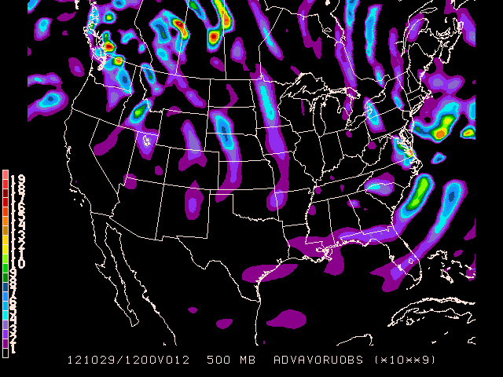

GEMPAK Online Tutorial
7. Gridded Data Mapping
Gridded data may be obtained from numerical model output, or by performing objective analysis on surface or sounding data sets using the OA programs. For now, we will deal with data that is already in gridded form. Later we will see what goes in to converting surface and upper air data into grid files, and learn about the various models available for ingest via the LDM.
Grid Data Types
Gridded data assumes one of two forms:
- Scalar data - possess only magnitude (handled by the program
gdcntr)
- Vector data - comprised of both magnitude and direction (handled by
gdstream and gdwind)
The program gdplot2 is designed to handle both scalar and vector data. Think of gdplot2 as a combination of the capabilities offered by gdcntr, gdstream and gdwind in one program.
Before we look at the GD plotting programs, we have to familiarize ourselves with a very useful program called gdinfo.
GDINFO - Grid Info
gdinfo lists information about the navigation and fields stored within a GEMPAK grid file.
GDFILE Grid file
LSTALL Full list flag
OUTPUT Output device/filename
GDATTIM Grid date/time
GLEVEL Grid level
GVCORD Grid vertical coordinate
GFUNC Scalar grid
Let's run gdinfo for the first time to load the default Hurricane Bob grid:
gdinfo
GDFILE Grid file $GEMPAK/data/hrcbob.grd
LSTALL Full list flag YES
OUTPUT Output device/filename T
GDATTIM Grid date/time LAST
GLEVEL Grid level 500
GVCORD Grid vertical coordinate PRES
GFUNC Scalar grid TMPC
Parameters requested: GDFILE,LSTALL,OUTPUT,GDATTIM,GLEVEL,GVCORD,GFUNC.
GEMPAK-GDINFO>r
Grid Navigation
Before listing the requested grids, gdinfo will print out the full pathname of the grid file, the grid navigation, analysis block, and number of grids in the file:
GRID FILE: /Users/gempak/GEMPAK6.7.0/gempak/data/hrcbob.grd
GRID NAVIGATION:
PROJECTION: STR
ANGLES: 90.0 -105.0 0.0
GRID SIZE: 53 45
LL CORNER: 7.65 -133.44
UR CORNER: 44.29 -23.75
GRID ANALYSIS BLOCK:
ANALYSIS TYPE: BARNES
DELTAN: 3.750
DELTAX: 2.110
DELTAY: 0.833
GRID AREA: 7.65 -133.44 44.29 -23.75
EXTEND AREA: 7.65 -133.44 44.29 -23.75
DATA AREA: 7.65 -133.44 44.29 -23.75
Number of grids in file: 433
Maximum number of grids in file: 500
Un oh, what's this?
[GDU 2] Did not find any matching grids.
This is because gdinfo is looking for grid TMPC at 500 mb PRES at GDATTIM = last, but this grid can not be found. Let's set GFUNC = all and GDATTIM = first to see the first grids available:
NUM TIME1 TIME2 LEVL1 LEVL2 VCORD PARM
33 910819/0000F000 500 PRES TMPK
34 910819/0000F000 500 PRES RELH
36 910819/0000F000 500 PRES HGHT
37 910819/0000F000 500 PRES OMEG
38 910819/0000F000 500 PRES UREL
39 910819/0000F000 500 PRES VREL
 Note that if only one parameter is entered, the program searches only for that parameter. In the case above, the grid
Note that if only one parameter is entered, the program searches only for that parameter. In the case above, the grid TMPC was being searched for but not found. gdinfo does not perform grid parameter conversions!
If GFUNC = all is entered, the program will match all of the parameters in its search. Entering several parameters separated by semicolons will match those parameters only.
Now that we know what grids are available, we can start plotting the data with gdcntr.
Scalar Plotting
GDCNTR Input Parameters
gdcntr draws contour lines through a scalar grid computed
using the GEMPAK grid diagnostic functions.
GDATTIM Grid date/time
GLEVEL Grid level
GVCORD Grid vertical coordinate
GFUNC Scalar grid
GDFILE Grid file
CINT Contour interval/min/max
LINE Color/type/width/label/smth/fltr/scflg
MAP Map color/dash/width/filter flag
MSCALE fgc;bgc;mask/units/lat;hide/values/anch/x;y/ln;wd/freq|text_info|t
TITLE Title color/line/title
DEVICE Device|name|x size;y size|color type
SATFIL Satellite image filename(s)
RADFIL Radar image filename(s)
IMCBAR Color/ornt/anch/x;y/ln;wd/freq
PROJ Map projection/angles/margins|drop flag
GAREA Graphics area
IJSKIP Iskp;Istrt;Istp/Jskp;Jstrt;Jstp
CLEAR Clear screen flag
PANEL Panel loc/color/dash/width/regn
TEXT Size/fnt/wdth/brdr/N-rot/just/hw flg
SCALE Scalar scale / vector scale
LATLON Line color/dash/width/freq/inc/label/format
HILO Color/symbol/rng/rad/cnt/intp
HLSYM HILO txt size/posn/font/wdth/hw
CLRBAR Color/ornt/anch/x;y/ln;wd/freq|text_info
CONTUR Subbox/smooth
SKIP Skip_cntr/skip_plt_x;skip_plt_y
FINT Fill interval/min/max
FLINE Fill colors/fill types
CTYPE Contour type: C/F
LUTFIL Enhancement lookup table filename
STNPLT Txtc/txt attr|marker attr|stnfil#col
Contouring and Filling
Contours may be displayed three different ways:
CTYPE = c draws contour lines using input from CINT and LINE.CTYPE = f draws filled contours using input from FINT and FLINE.CTYPE = f/c draws both contour lines and filled contours.
CINT specifies the contour interval, minimum value, and maximum value separated with slashes:
CINT = contour interval / minimum / maximum / ndigits
Likewise, FINT specified the same intervales, minimum and maximum values for color-filled contours.
Line Type
LINE is the color, line type, line width, line label freqency, smoothing separated by slashes, and flag to suppress small contours. The individual values in each group are separated by semicolons:
colr1;..;colrn/type1;..;typen/width1;..;widthn/labl1;..;labln/smth/fltr
For example:
LINE = 1;2 / 7;8 / 4;5 / 2 / 2
assigns colors 1 and 2 to alternate lines, dashing patterns 7 and 8 to
alternate lines, line widths 4 and 5 to alternate lines, and labels
every other line. Smoothing level 2 is used on all lines.
If any specification is missing, a default of 1 is used, except for smoothing, which defaults to 0, or no smoothing.
There are ten distinct line types:
- solid
- short dashed
- medium dashed
- long dash short dash
- long dash
- long dash three short dashes
- long dash dot
- long dash three dots
- medium dash dot
- dotted
Exercise #9 (Simple Gridded Contours)
Use gdcntr to plot 500mb heights for last nights 0000 UTC GFS forecast valid at 1200 UTC this morning, using the standard 60 m contour interval.
GDATTIM = 0000f12
GLEVEL = 500
GVCORD = pres
GFUNC = hght
GDFILE = gfs
CINT = 60
LINE = 5/1/2
MAP = 1
MSCALE = 0
TITLE = @
DEVICE = xw
SATFIL =
RADFIL =
IMCBAR =
PROJ = STR/90;-100;0
GAREA = us
IJSKIP =
CLEAR = yes
PANEL = 0
TEXT = 1
SCALE = 999
LATLON =
HILO =
HLSYM =
CLRBAR =
CONTUR = 3
SKIP = 0
FINT = 0
FLINE = 10-20
CTYPE = C
LUTFIL =
STNPLT =
Now overlay 500mb absolute vorticity ontop of the 500mb map we just plotted. Remember the check the CLEAR setting so the graphics area isn't cleared before we plot another layer!
CLEAR = no
GFUNC = avor(wnd)
CINT = 0
LINE = 3/10
TITLE = 1/-2
Now mark the vorticity centers the old fashioned way, X's for maximas, -'s for minimas, and run again
hilo = 6;6/X;-
hlsym = 3/2/22/1/hw
Exercise #10 (Color-Fill Grid Contours)
With that we've visualized vorticity advection for this morning's forecast from last night. But why don't we save some work and have GEMPAK compute vorticity advection itself:
clear = y
ctype = f
hilo =
fline = 0;30-7
fint = 1/1
scale = 9
gfunc = adv(avor(wnd),wnd)

GDMAP - Point Data
gdmap plots data computed from GEMPAK grid files on a map.
GDATTIM = 0000f12
GLEVEL = 500
GVCORD = pres
GFUNC = tmpf
GDFILE = gfs
GAREA = us
IJSKIP = 2
COLORS = 6
TITLE = 1/-2
SCALE =
DEVICE = xw
PROJ = STR/90;-100;0
CLEAR = y
TEXT = 1
GRDLBL = 0

Vector Plotting
GDWIND - Wind Vectors
gdwind draws wind barbs or arrows at each grid point of a
vector grid. Vector plots can be drawn for any vector field
computed using the GEMPAK grid diagnostic functions.
As an example, plot 300 and 700 mb wind barbs
GDATTIM = 0000f12
GLEVEL = 300
GVCORD = pres
GVECT = geo
GDFILE = gfs
GAREA = us
IJSKIP = 1
SATFIL =
RADFIL =
IMCBAR = 1
SKIP = /-1
WIND = bk6
REFVEC =
MAP = 1
MSCALE = 0
LATLON =
PANEL = 0
TITLE = 1
DEVICE = xw
PROJ = STR/90;-100;0
CLEAR = y
SCALE =
TEXT = 1
LUTFIL =
STNPLT =
GEMPAK-GDWIND>r
CLEAR = no
GLEVEL = 700
WIND = bk22
GEMPAK-GDWIND>r

GDSTREAM - Streamlines
gdstream draws streamlines through any vector grid computed
by the grid diagnostics package. The vector grid is specified
by GVECT.
GDATTIM = last
GLEVEL = 850
GVCORD = pres
GVECT = wnd
GDFILE = gfs
GAREA = us
IJSKIP =
SATFIL =
RADFIL =
IMCBAR = 1
LINE = 6/1
MAP = 1
MSCALE = 0
LATLON =
TITLE = 1
PANEL = 0
TEXT = 1
DEVICE = xw
PROJ = STR/90;-100;0
CLEAR = y
WIND =
LUTFIL =
STNPLT =
STREAM =

In the examples above, we were able to contour layers on top of each other with the CLEAR = no definition. Now we will learn an easier way to display multiple grids on the same map using gdplot2.
Plotting Scalars and Vectors
GDPLOT2 Input Parameters
gdplot2 has the special ability to plot multiple sets of contours, vectors and/or streamlines for each frame.
GDFILE Grid file
GDATTIM Grid date/time
GLEVEL Grid level
GVCORD Grid vertical coordinate
PANEL Panel loc/color/dash/width/regn
SKIP Skip_cntr/skip_plt_x;skip_plt_y
SCALE Scalar scale / vector scale
GDPFUN Scalar grid or vector grid function
TYPE GDPLOT2 function processing type
CONTUR Subbox/smooth
CINT Contour interval/min/max
LINE Color/type/width/label/smth/fltr/scflg
FINT Fill interval/min/max
FLINE Fill colors/fill types
HILO Color/symbol/rng/rad/cnt/intp
HLSYM HILO txt size/posn/font/wdth/hw
CLRBAR Color/ornt/anch/x;y/ln;wd/freq|text_info
WIND Wind symbol/siz/wdth/typ/hdsz
REFVEC Mag;x;y;txtsiz/font/wdth/HW;labl
TITLE Title color/line/title
TEXT Size/fnt/wdth/brdr/N-rot/just/hw flg
CLEAR Clear screen flag
GAREA Graphics area
IJSKIP Iskp;Istrt;Istp/Jskp;Jstrt;Jstp
PROJ Map projection/angles/margins|drop flag
MAP Map color/dash/width/filter flag
MSCALE fgc;bgc;mask/units/lat;hide/values/anch/x;y/ln;wd/freq|text_info|t
LATLON Line color/dash/width/freq/inc/label/format
DEVICE Device|name|x size;y size|color type
STNPLT Txtc/txt attr|marker attr|stnfil#col
SATFIL Satellite image filename(s)
RADFIL Radar image filename(s)
IMCBAR Color/ornt/anch/x;y/ln;wd/freq
LUTFIL Enhancement lookup table filename
STREAM lines/arrows/stop/slow/scale
POSN Position / Text format
COLORS Color list
MARKER Marker color/type/size/width/hw
GRDLBL Grid point label color
FILTER Filter data factor
Plotting Multiple Fields
Exclamation points ! are used in GDPFUN to delimit multiple overlays of scalar and vector fields. All other parameters (except DEVICE, CLEAR and LUTFIL) may contain exclamation points to delimit specifications for the fields defined by GDPFUN. If any parameter contains more specifications than the maximum number of plots specified in GDPFUN or GDFILE, they will be ignored. Positions between exclamation points may be left blank. Most parameters will replace the blank with the previous value (repeat). A trailing exclamation point will be treated as a blank. If there is no trailing exclamation point, the last specification will be repeated for subsequent plots.
Exercise #11 (Scalars and Vectors)
Use gdplot2 to plot 12-hr precipitation color area contours, overlaid with sea level pressure line contours, and 850 mb wind vectors. Use the 12hr forecast fields of the most recent GFS model.
GDPFUN = p12m ! emsl ! wnd
GLEVEL = 0 ! 0 ! 850
GVCORD = none ! none ! pres
TYPE = f ! c ! b
GAREA = uslcc
PROJ = def
CINT = ! 4 !
FINT = 2.5/2.5 ! !
FLINE = 0;30-7
SCALE = 0
TITLE = 1/-1 ! 1/-2 ! 1/-3
GEMPAK-GDPLOT2>r
Each column seperated by exclamation points essentially contains it's own instructions on what to contour or plot and how. gdplot2 eliminates the need to run GEMPAK programs multiple times with the CLEAR = n option.
In this example there are three fields being plotted:
- 12-hour precipitation in mm
GDPFUN = p12m at the surface GLEVEL = 0 with a fill interval of 2.5 mm, beginning at 2.5 mm FINT = 2.5/2.5, each level colored in the range 30-7, with no color drawn for levels lower than 2.5 mm FLINE = 0;30-7.
- sea level pressure
GDPFUN = emsl contoured TYPE = c every 4 millibars CINT = 4.
- 850mb
GLEVEL = 850 wind GDPFUN = wnd barbs TYPE = b.

Later on in the workshop tutorial we will revisit multiple fields plotted on the same map using gdplot2, and get more in depth with shell scripting to make it happen.
GEMPAK Online Tutorial | Next: Grid Diagnostics